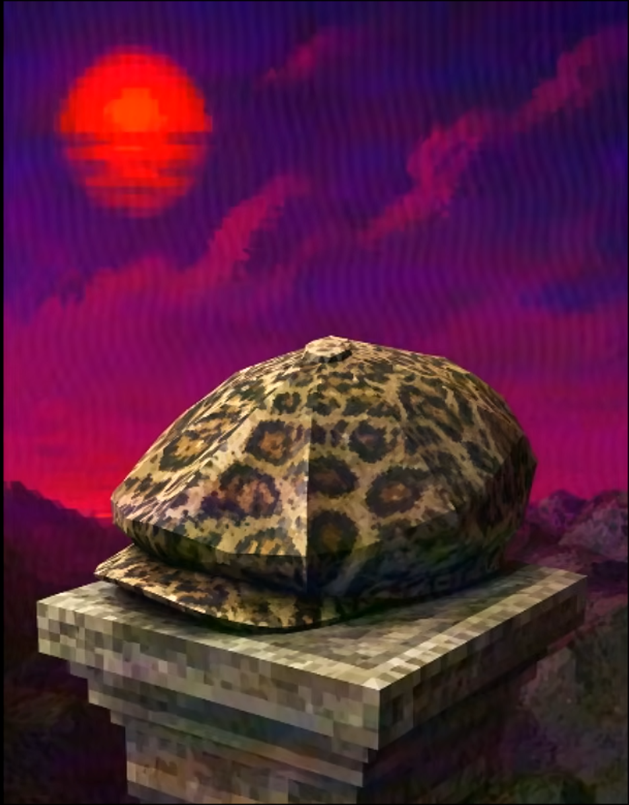

Скидка
Шапец
Больше чем просто головной убор — абсолютный символ стиля и весомого статуса в Сумеречной роще.
В наличии
Описание
Больше чем просто головной убор — это абсолютный символ стиля и весомого статуса в Сумеречной роще. Обладает подтвержденным авторитетом: при встрече с Подмыханом гарантирует бесплатный и беспрепятственный проход по его территории. Это единственный артефакт, способный усмирить истинную форму Алефтины и спасти от её молота.
Технические характеристики товара
| Параметр | Значение |
|---|---|
| Категория | Одежда и статус |
| Материал | Спектральная слюда повышенной плотности |
| Эффект | +100% к уважению прохожих в Сумеречном лесу |
| Совместимость | Защита от молотов любого калибра |
| Авторитет | При встрече с Подмыханом — бесплатный проход по его территории |
| Особое свойство | Единственный артефакт, способный усмирить истинную форму Алефтины |
| Наличие | В наличии |